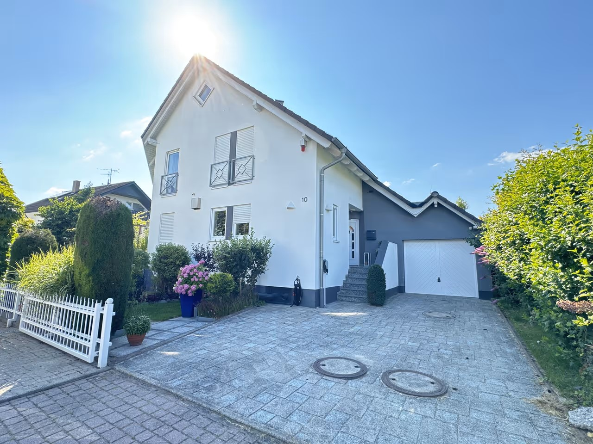
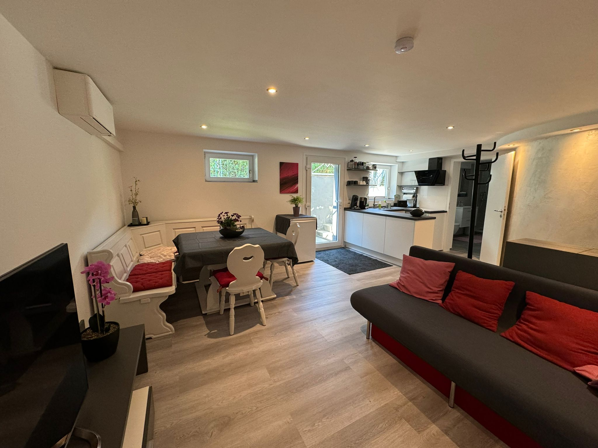
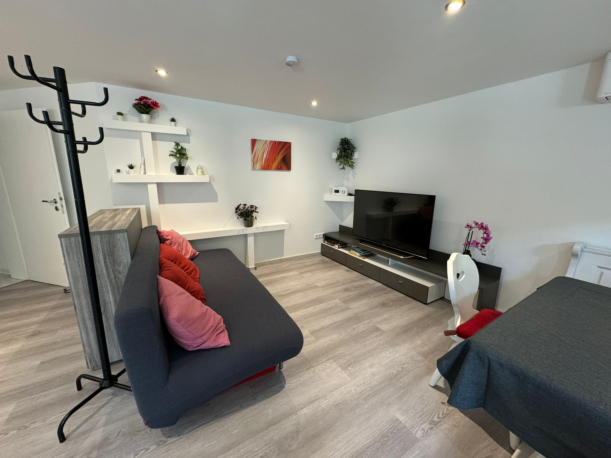
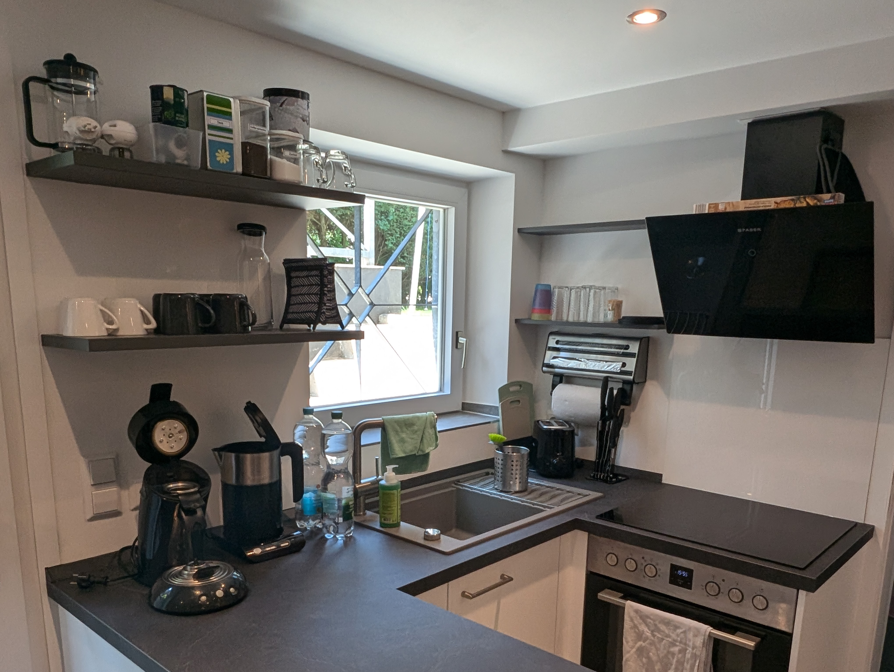
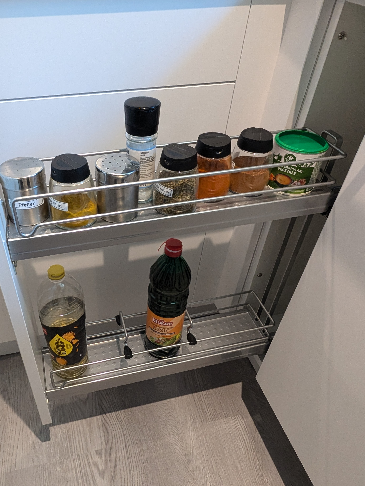
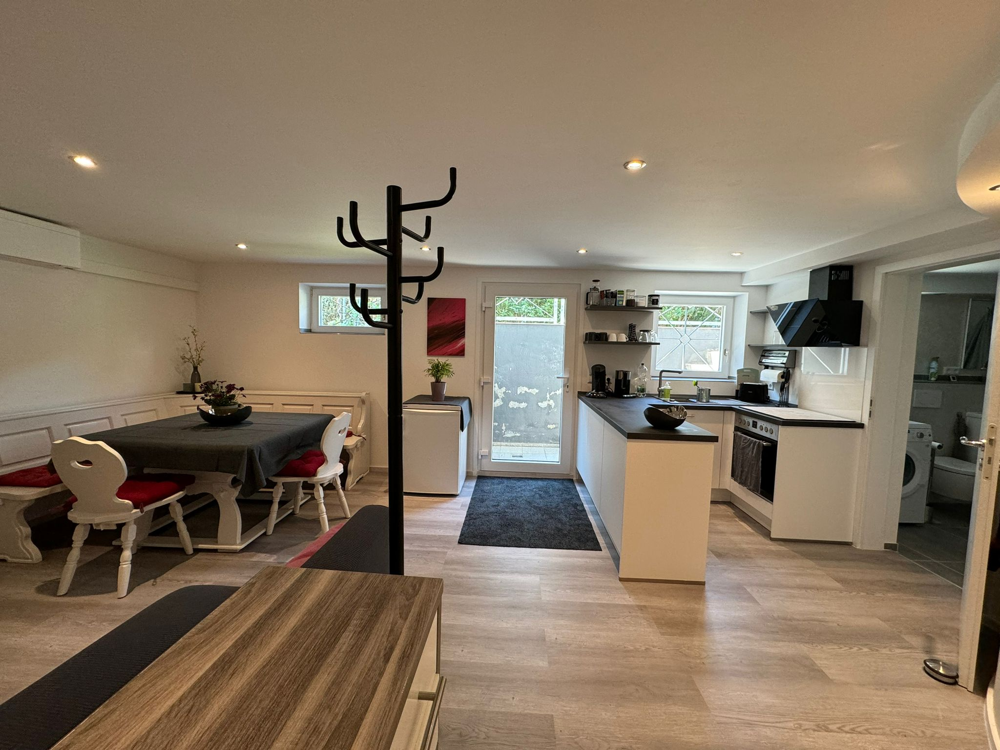
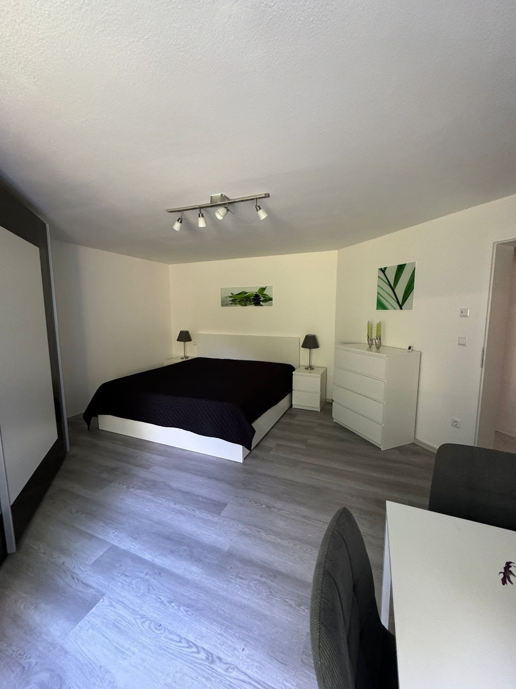
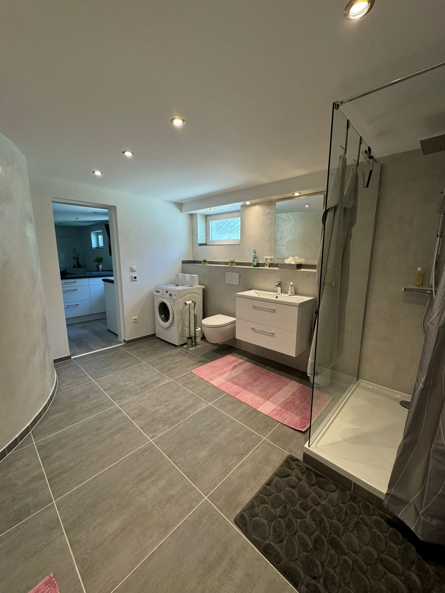
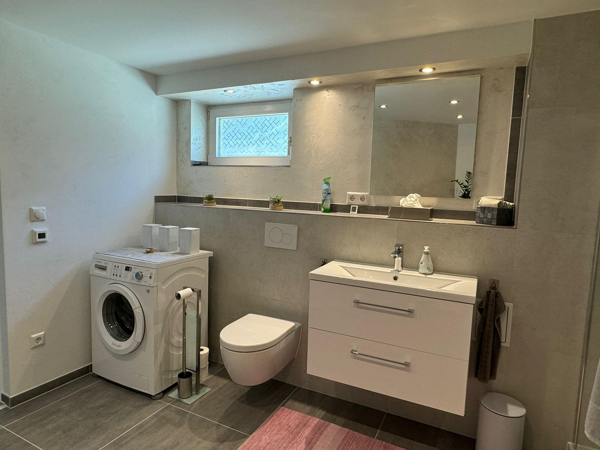
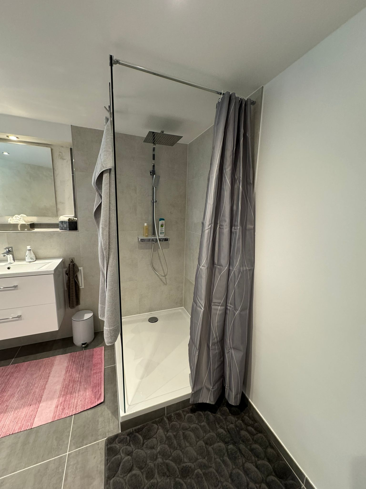

Willkommen
Ferienwohnung Ötigheim – Ihr Zuhause auf Zeit in der Region Rastatt
Die gemütliche 60 m² große Ferienwohnung in Ortsrandlage von Ötigheim bei Rastatt bietet Komfort und Entspannung für bis zu 4 Personen. Diese moderne Ferienwohnung ist ideal als Projektwohnung, Monteurzimmer für Urlaub oder Geschäftsreisen.
- maximal 4 Personen (max. 3 Erwachsene)
- voll ausgestattete Küche mit Kochfeld, Backofen, Kühlschrank
- Highspeed-WLAN, Smart-TV mit Streaming-Diensten
- Klimaanlage, Waschmaschine und Trockner
- eigener Eingang, Parkplatz auf dem Grundstück

Galerie
Die gut ausgestatte Ferienwohnung
Kombinierte Wohn- & Essküche
Das Wohnzimmer mit ausziehbarer Schlafcouch (Breite 1,40 m) bietet viel Platz zum Entspannen und Genießen. Ein Smart-TV mit IPTV steht ebenso zur Verfügung wie vorinstallierte Streaming-Apps.
Der integrierte Essbereich mit großzügiger Essbank und Stühlen bietet genug Platz für gemütliches Essen und Trinken.


Moderne, kompakte Küche
Die Küche ist mit Senseo-Kaffeemaschine, Wasserkocher, Toaster, Ceran-Kochfeld und Backofen ausgestattet.
Eine Basisausstattung an Besteck, Geschirr, Töpfen, Pfannen, Gewürzen, Kaffee, Öl und Essig finden Sie vor Ort.



Großzügiges Schlafzimmer
Genießen Sie erholsame Nächte in einem bequemen, großen Bett mit 2 Matratzen. Zusätzlich finden Sie Nachtkästchen, Nachttischlampe, Schrank, Kommode und eine Sitzgarnitur inklusive Tisch.

Hochwertiges, neues Badezimmer
Ein komplett neues, hochwertiges Badezimmer rundet Ihren Aufenthalt ab. Genießen Sie die große Regenfalldusche und Fußbodenheizung. Waschmaschine inkl. Waschpulver und ein Trockner stehen Ihnen im Bad zur Verfügung.



Warum diese Unterkunft?
Ruhige, kühle Nächte
Die Wohnung liegt im sommerlich kühlen Souterrain eines Einfamilienhauses in entspannter Ortsrandlage an einer Sackgasse.
Praktische Lage
In der Nähe befinden sich Supermärkte, Bäckereien und eine Bahnhaltestelle. Ideal für Besuche der Volksschauspiele oder Ausflüge nach Rastatt, Karlsruhe, Baden-Baden, Schwarzwald und Elsass.
Parken leicht gemacht
Ein Parkplatz ist auf dem Grundstück vorhanden, zusätzlich gibt es kostenlose Parkmöglichkeiten entlang der Straße.
Lage & Anfahrt
So finden Sie uns
Adresse
Ferienwohnung Ötigheim
Finkenweg 10
76470 Ötigheim
Die Unterkunft liegt ruhig in der Ortsrandlage von Ötigheim und ist ideal für Ausflüge nach Rastatt, Karlsruhe oder in den Schwarzwald.
Anfahrt: Die Wohnung ist mit dem Auto gut erreichbar und bietet einen eigenen Parkplatz auf dem Grundstück.